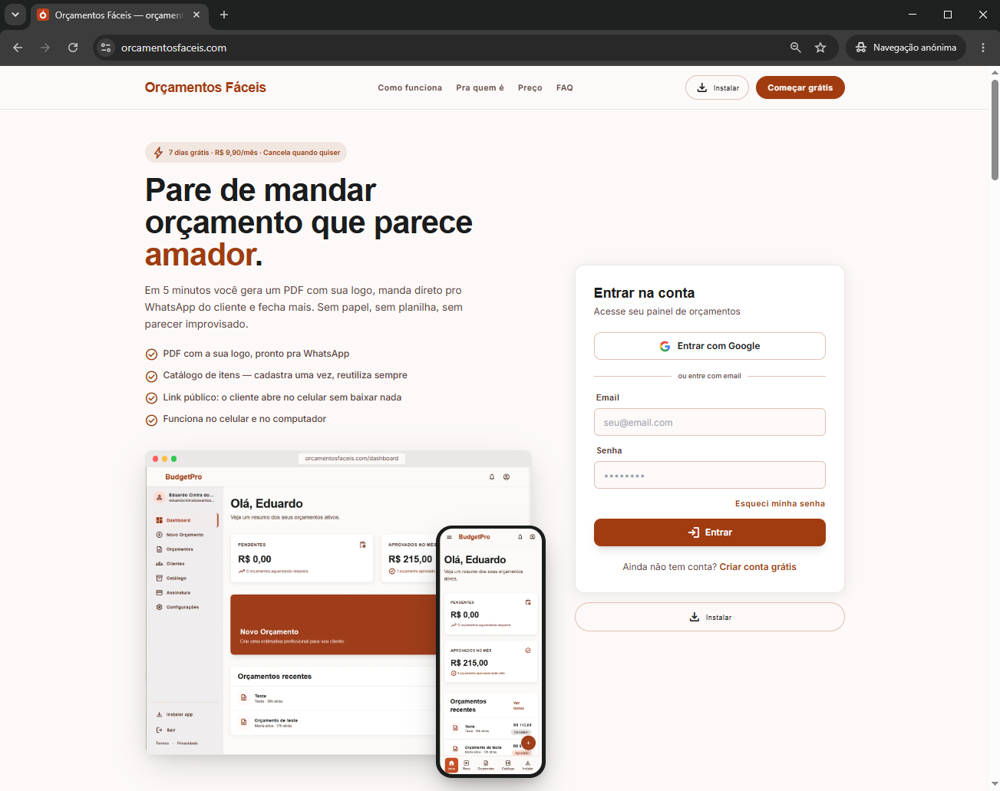

Frontend
HTML, CSS e JavaScript com auxílio de IA
Olá, eu sou
Desenvolvedor Backend Java
Construo APIs robustas, seguras e escaláveis com Java e Spring Boot. Foco em arquitetura, lógica de negócio e integração com bancos de dados.
Stack utilizada no desenvolvimento deste portfólio e nos meus projetos
HTML, CSS e JavaScript com auxílio de IA
Java + Spring Boot
Containerização de aplicações
PostgreSQL
Railway
Git / GitHub
Minha trajetória profissional começou na N2 Sistemas como analista de suporte júnior. Ao longo dos anos, evolui para pleno e sênior — com levantamento de requisitos, banco de dados e contato direto com clientes: entender dificuldades, apresentar soluções e conduzir a adoção das ferramentas no dia a dia.
Depois dessa base, migrei para o desenvolvimento na mesma empresa. Participei de projetos como um aplicativo de vendas para Android, publicado na Play Store, e um sistema de totem de autoatendimento. Foi nesse contexto, trabalhando com Flutter, que identifiquei minha afinidade com lógica de negócio, arquitetura e APIs — o que me direcionou ao backend com Java e Spring Boot.
Atualmente foco em Java e Spring Boot, unindo essa vivência com clientes e produto a uma formação sólida em backend.
Engenharia de Software
UNIFACE — Centro Universitário Municipal de Franca
Análise e suporte — requisitos, banco de dados e relacionamento com clientes
Desenvolvimento — app de vendas mobile (Play Store) e totem de autoatendimento
Migrar para desenvolvimento backend
Projetos que demonstram minhas competências técnicas

Orquestrado com IASaaS em produção — desenvolvido 100% com IA, com meu papel de orquestração, revisão e direcionamento do produto.
Persistência JDBC pura com Postgres no Docker, Flyway, CRUD completo e triggers de auditoria. Clique para ver configuração, SQL e link do código.
Exercícios práticos de POO em Java com menu interativo no terminal. Projeto em evolução — clique para ver decisões de arquitetura e link do código.
Gerenciador de tarefas com Spring Boot — próxima trilha do bootcamp depois da POO. Repositório criado; implementação ainda por começar.
Tem uma oportunidade, dúvida ou quer trocar ideia sobre backend? Entre em contato pelos links abaixo.